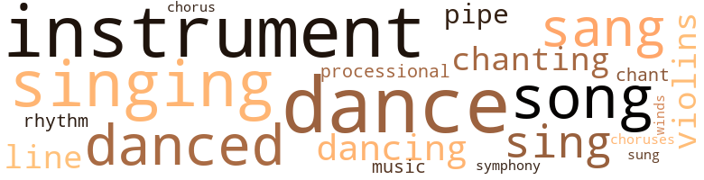
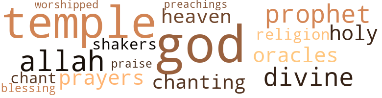

Kasamance: A Fantasy, by Dunham, Katherine (1974)
94 music-related terms matched in this text.
Most frequent terms in this topic: dance (11); singing (10); instruments (9); danced (8); sang (7)
chant.n.01
Definition: a repetitive song in which as many syllables as necessary are assigned to a single tone
| word | sentence |
|---|---|
| chants | For the most part , however , the secret societies practiced new songs and dances and chants that could be seen without taboo by women and children and the foreigners from Ouagadesh . |
| chant | On this occasion Tombon was present , and at a signal from the Chamberlain moved his five drums to the center of the stage and closed his eyes as he sang a chant of gratitude to his own ancestral spirits which no one present could understand because it was ancient and secret . |
chorus.n.01
Definition: any utterance produced simultaneously by a group
| word | sentence |
|---|---|
| choruses | Each regiment , led by its own captain , completed complicated formations and choreographic patterns , sometimes with mounted soloists and choruses resembling ballets . |
| chorus | Behind these percussionists came a chorus of very tall very thin black men playing on flutes or reed instruments , the harmonies and rhythms of which seemed to please His Majesty Dougo-Wawa who travelled in the midst of them , but the musical effect of which was very unpleasant to the Kasamancians , especially to the horses of the Royal Regiments , who became nervous and rolled their eyes and could scarcely be kept in place , and to small children who ran screaming to their parents in the crowds lining the Seven Highways . |
dance.n.01
Definition: an artistic form of nonverbal communication
| word | sentence |
|---|---|
| dances | Most people did not know this , because Thiam , unlike most griots , was very shy , and sometimes for days on end he would do nothing but play his drums , beating out the harsh war dances or gay festival dances of long ago , or sing the poetry and love songs of his tribe , the Ouloff ( Woloff ) . |
| dances | " She 's all our father thinks about while we wait on her and starve and never have a chance to go to dances or meet young men or get married . |
| dances | For the most part , however , the secret societies practiced new songs and dances and chants that could be seen without taboo by women and children and the foreigners from Ouagadesh . |
| dances | The Queen Mother and other wives of Mosso Dinga and the entire Kasamancian Royal Family dropped their eyes during some of the dances , applauded lightly , and at the proper moment retired so that all could be prepared for the great event at the Colosseum which would begin to take place at sun-up with all sorts of varied entertainment , though the two Royal Monarchs would arrive some time later-even after the noon meal , it was now decided , taking note of the exhaustion of the King of Ouagadesh . |
| dance | Then they backed away to the center of the arena and amidst roars and cheers of appreciation began the Korosol , national dance of the Kingdom of Kasamance in those days . |
| dance | There was no way , my Dearest , to describe the dance of Kine-Kan , which included leaps that sometimes made her appear ten feet tall , and sinuous movements that would have put any forest serpent to shame , and such shading of majesty and modesty and invitation and delicacy as would need twelve people all in one to make any comparison . |
| dance | To the left of the First Wife , one hundred and twelfth in line in the Royal Circle of the Colosseum , Abila was certain of her choice and sat back fanning herself with a silver-plated palm leaf while Kine-Kan , not at all exhausted as the others , finished her dance in a low bow before the Royal Box , threw kisses to Tombon , and escorted by her trembling mother walked proudly back to her dressing room as she had been instructed , but she would have walked proudly anyway , being so used to many trips from the rice fields with trays laden with wet grain . |
| dance | The next day bright and early the streets of the Capital were swarming with song , dance and gossip . |
| dance | Abila gave her permission to rise , and there in the midst of the Royal Families , Kine-Kan danced her dance of the day before . |
| dance | At the end of Kine-Kan 's dance , Tombon and his drums retired into nowhere . |
| dance | DOUDOUMBA The dance of the Strong Men , usually done only by males of certain West African secret societies . |
| dance | KOROSOL National dance of Kasamance at the time of our story . |
dance.v.03
Definition: skip, leap, or move up and down or sideways
| word | sentence |
|---|---|
| danced | The King was accustomed to being met at the baobab tree inside the court by the holy man , and was therefore surprised when after his ride through the forest and field , crossing small streams and passing rice paddies where the young girls , bare to the waist sang songs of welcome and danced in the water , he came upon the Holy Temple clearing and found the Onum lalu Boku standing in front of the gates which had been thrown wide . |
| danced | Then the two danced a very stately little step , turning , swaying , clasping hands , arms thrown wide , each looking deep into the other 's eyes for the magic moment of truth at which time there were no secrets between them . |
| dancing | At any rate , Beloved , the palace was a marvel to behold and could be seen for miles and miles around , a white cloud resting on the green banks of the river , with steps going right down to the waterfront if any of the Royal Family wanted to bathe , or promenade up or down or across the river by raft , reclining under tents of silk or fine linen of many colors , while boats and barks of lesser chiefs drifted alongside or were rowed nearby so that greetings could be exchanged and feasting and dancing and singing could all take place on the water . |
| dance | This day had indeed opened their eyes to the fact that there was much outside the walls of the marble palace , some of it very exciting ( especially when they had come upon bands of young warriors at practice or groups of boys wrestling or learning to dance the war dance , the doudoumba , from a licensed dancing master ; or hunters quietly weaving through the tall grass stalking game or on the trail returning with big and small game for food or for skins , singing and dancing of their own skill and bravery . |
| dance | The Colosseum for training the regiments would be open for the event , and on the first day the Pass and Pair groups would be asked to dance , sing , join in singing and dancing in groups or singly , recite poetry , mingle with the crowds of young men and women of the Capital and finally end in review before the Queen 's Council Committee . |
| danced | But just out of reaching them the chargers stood on hind feet , danced around , and dashed into another formation . |
| dancing | Kine-Kan began singing the crocodile song louder and louder , and clapping and dancing at the same time . |
| danced | The cljumbe drums entered and so did the Koras and balafongs and other instruments on signs from Tombon ; and one by one each young maiden danced until she fell exhausted and was led to her dressing room by anxious guardians . |
| dance | The last of the One Hundred Chosen to dance was Kine-Kan . |
| danced | And Kine-Kan danced with the drums behind her and the King of Ouagadesh before her , and danced as no one had ever seen before or dreamed of even in the sights and visions brought within reach while sipping Royal Nectar which , of course , very few of those present had experienced . |
| danced | And Kine-Kan danced with the drums behind her and the King of Ouagadesh before her , and danced as no one had ever seen before or dreamed of even in the sights and visions brought within reach while sipping Royal Nectar which , of course , very few of those present had experienced . |
| danced | For several hours , Beloved , these two hundred truly ravishing Second Choice young maidens danced and paraded and cavorted before the Kings of Kasamance and Ouagadesh . |
| danced | Abila gave her permission to rise , and there in the midst of the Royal Families , Kine-Kan danced her dance of the day before . |
| dancing | Some who later recalled the occasion swore to have seen a coral serpent dancing his way happily among the guests . |
intonation.n.03
Definition: the act of singing in a monotonous tone
| word | sentence |
|---|---|
| chanting | While some of the Kasamance village women spent days and nights in sacred baobab trees praying and drinking palm wine and dancing and chanting and singing and making sacrifices to the spirits of the baobab trees and to those gods who particularly interest themselves in women 's affairs , others stayed at home and helped the one hundred First Choice and the two hundred Second Choice maidens with their wardrobes for the Final Selection , in the ceremonies before Dougou-Wawa Sotoko himself . |
music.n.01
Definition: an artistic form of auditory communication incorporating instrumental or vocal tones in a structured and continuous manner
| word | sentence |
|---|---|
| music | The Royal Chamberlains of both Kingdoms rushed to the Royal Box , ordered special musicians to play special siesta music and aided by Ouagadesh slaves lifted the mighty monarch to the shoulders of his bearers and from there to the backs of steeds , and then called for silence as the rest of the Ouagadesh Court and entourage followed tip-toeing after their sleeping monarch . |
| music | After such an expenditure of energy His Majesty sank back into the throne chair , called for refreshments to be served to everyone , and for music to be played while he presented his other Royal Wives , who had been languishing for these two days in their golden cages beneath the tents guarded by elephants . |
musical_instrument.n.01
Definition: any of various devices or contrivances that can be used to produce musical tones or sounds
| word | sentence |
|---|---|
| instrument | She should also sing and play an instrument ( to soothe , not arouse ) , should dance , recite the history of the nation of Kasamance , and read cowries , for fun , not too seriously , or the witch doctors would become jealous . |
| instruments | One also came upon corps of drummers in ensemble or accompanying orchestras of stringed instruments and horns and violins and halafongs and other percussive and melodic instruments . |
| instruments | One also came upon corps of drummers in ensemble or accompanying orchestras of stringed instruments and horns and violins and halafongs and other percussive and melodic instruments . |
| instrument | First to enter the outer gates of the city of Ziguinchor were one hundred trumpeters , all of the trumpets of gold and carrying banners embroidered with the Royal elephant of Ouagadesh in pearls strung on silver threads ; then came one hundred and twenty-four players of a strange instrument part drum and part harp and beaded all over and giving out the sound of high tenor voices with a few bass notes intermingled for rhythm . |
| instruments | Then there were two hundred and thirty-nine drummers playing percussive instruments of clay or copper or brass covered tightly with shaven sheep skin . |
| instruments | Some of these instruments had two heads and many strings connecting the two and changed tone by being squeezed under the arm and struck with a sharp stick on one head while others of the same kind were struck only with fingers . |
| instruments | Behind these percussionists came a chorus of very tall very thin black men playing on flutes or reed instruments , the harmonies and rhythms of which seemed to please His Majesty Dougo-Wawa who travelled in the midst of them , but the musical effect of which was very unpleasant to the Kasamancians , especially to the horses of the Royal Regiments , who became nervous and rolled their eyes and could scarcely be kept in place , and to small children who ran screaming to their parents in the crowds lining the Seven Highways . |
| instruments | After the King of Ouagadesh retired there were musicians playing odd kinds of instruments and dancing women who were quite nude and very fat , according to Kasamancian taste . |
| instrument | Suffice to say the three hundred players of the stringed instrument known as Kora , the one hundred thirty-two players of the mirimba-like balafong , the ninety-nine best singers of the Kingdom , the two hundred tabala and tamar drummers and seventy-eight djumbe drummers and the sixty-two shakers of calbasse and the ninety-seven players of violins and the one hundred sixty-eight players of bells and other percussive instruments were a joy to the Kasamancians and guests alike . |
| instruments | Suffice to say the three hundred players of the stringed instrument known as Kora , the one hundred thirty-two players of the mirimba-like balafong , the ninety-nine best singers of the Kingdom , the two hundred tabala and tamar drummers and seventy-eight djumbe drummers and the sixty-two shakers of calbasse and the ninety-seven players of violins and the one hundred sixty-eight players of bells and other percussive instruments were a joy to the Kasamancians and guests alike . |
| instruments | The cljumbe drums entered and so did the Koras and balafongs and other instruments on signs from Tombon ; and one by one each young maiden danced until she fell exhausted and was led to her dressing room by anxious guardians . |
| instruments | She directed all of her attention to the King of Ouagadesh , while all of the other instruments were silenced one by one leaving only Kine-Kan in the center of the arena and Tombon in the center of the musicians ' stage . |
| instrument | BALAFON Xylophone - a musical percussive instrument modulating tones by striking a series of wooden bars graduated in length . |
pipe.n.04
Definition: a tubular wind instrument
| word | sentence |
|---|---|
| pipe | But when this was over and the bath of herbs and ointment finished and the King was lying on his lion skin couch in his private apartment , the old man packed a long silver tube inscribed with holy letters full of sweet-smelling leaves , filled a rhinoceros horn pipe for himself , and sat cross-legged on the floor matting beside the King . |
| pipes | Each sighed a long sigh of pleasure , and as the vapor curled from the pipes a great silence settled in the room which had seemed very quiet before but nothing like now . |
processional.n.01
Definition: religious music used in a procession
| word | sentence |
|---|---|
| processional | This , my Loved One , is a description of the entrance of the processional of His Majesty Dougo-Wawa Sotoko-Toure Kafia kingi Iferogoba Kebir of Ouagadesh and Surrounding Territories , into the city of Ziguinchor , as has been handed down by the most respected of griots for many hundreds of years , even more , since we do not know the exact date of the Kingdom of Kasamance when our story is taking place , much less of the much talked of Ouagadesh whose king , by reason of increased obesity , seldom left the Capital of his Kingdom after our story ends . |
| processional | ( Strange as it may seem , the processional from Ouagadesh entered all highways at the same time . |
rhythm.n.04
Definition: the arrangement of spoken words alternating stressed and unstressed elements
| word | sentence |
|---|---|
| rhythm | First to enter the outer gates of the city of Ziguinchor were one hundred trumpeters , all of the trumpets of gold and carrying banners embroidered with the Royal elephant of Ouagadesh in pearls strung on silver threads ; then came one hundred and twenty-four players of a strange instrument part drum and part harp and beaded all over and giving out the sound of high tenor voices with a few bass notes intermingled for rhythm . |
| rhythms | Behind these percussionists came a chorus of very tall very thin black men playing on flutes or reed instruments , the harmonies and rhythms of which seemed to please His Majesty Dougo-Wawa who travelled in the midst of them , but the musical effect of which was very unpleasant to the Kasamancians , especially to the horses of the Royal Regiments , who became nervous and rolled their eyes and could scarcely be kept in place , and to small children who ran screaming to their parents in the crowds lining the Seven Highways . |
sing.v.02
Definition: produce tones with the voice
| word | sentence |
|---|---|
| sing | Most people did not know this , because Thiam , unlike most griots , was very shy , and sometimes for days on end he would do nothing but play his drums , beating out the harsh war dances or gay festival dances of long ago , or sing the poetry and love songs of his tribe , the Ouloff ( Woloff ) . |
| sang | The King was proud too , and all along the way people laughed and sang his praises and asked for special prayers to be made for them at the holy city . |
| sang | The King was accustomed to being met at the baobab tree inside the court by the holy man , and was therefore surprised when after his ride through the forest and field , crossing small streams and passing rice paddies where the young girls , bare to the waist sang songs of welcome and danced in the water , he came upon the Holy Temple clearing and found the Onum lalu Boku standing in front of the gates which had been thrown wide . |
| sing | The Royal Family and many dignitaries and officials and servants and slaves and personal escorts and bodyguards and dancing girls and musicians and griots ( those who sing the history of the nation and the happenings of the day ) , and merchants and tradesmen lived within the palace walls or in the city surrounding the palace . |
| sing | The Colosseum for training the regiments would be open for the event , and on the first day the Pass and Pair groups would be asked to dance , sing , join in singing and dancing in groups or singly , recite poetry , mingle with the crowds of young men and women of the Capital and finally end in review before the Queen 's Council Committee . |
| sing | She should also sing and play an instrument ( to soothe , not arouse ) , should dance , recite the history of the nation of Kasamance , and read cowries , for fun , not too seriously , or the witch doctors would become jealous . |
| sang | Kine-Kan walked and crawled through the tangles of the jungle with her mother and sang their favorite songs to these night creatures who followed wherever she and her mother went , and in this way she came upon Thiassa , the crocodile , who came well up from the shores of the river to sleep through the rainy season . |
| singing | Kine-Kan began singing the crocodile song louder and louder , and clapping and dancing at the same time . |
| sing | All were invited to the ceremony , but no one knew just when it would be , and by that time many of them would have lived out their short lifetimes ; but they were happy to have been of service during this , the most exciting of rainy seasons the griots would have to sing of , and to such a kind and intelligent Head Wife and her beautiful daughter . |
| sang | The orchestras of each Kingdom played , the singers of Kasamance sang of the beauties of the young women of Kasamance , and when the competitions began , the drummers advanced to the edge of the platform the better to follow the movements and dance steps of the maidens . |
| sang | On this occasion Tombon was present , and at a signal from the Chamberlain moved his five drums to the center of the stage and closed his eyes as he sang a chant of gratitude to his own ancestral spirits which no one present could understand because it was ancient and secret . |
| sang | With very few preliminary exercises and regimental displays and performances and exhibitions by the secret societies and men 's groups , the Kasamancian musicians were given a signal and the griots sang of the marvelous dancing of the preceeding day , and of the Second Choice Two Hundred Maidens who were as talented as those before , but each different in her own way . |
| sang | Each drum was slung on a wide cow hide thong around Tombon 's waist , and while some had thought to see a stand made for the five drums during the festivities of the day before , just now there was no stand and the drums seemed to advance on a momentum of their own , even while they talked and sang answers to their master in soprano and treble and alto and baritone and bass voices . |
| sung | I can only say that the people of Casamance ( as it is now spelled ) are without doubt descendants of that Royal Kingdom of our story , and no doubt during the hivernage when gathered in small groups of secret societies in the entrails of a giant baobab tree , where palm wine and good stories flow freely for the entire muggy season , this tale is told amongst the Casamancians and sung of by griots more often than any other . |
singing.n.01
Definition: the act of singing vocal music
| word | sentence |
|---|---|
| singing | At any rate , Beloved , the palace was a marvel to behold and could be seen for miles and miles around , a white cloud resting on the green banks of the river , with steps going right down to the waterfront if any of the Royal Family wanted to bathe , or promenade up or down or across the river by raft , reclining under tents of silk or fine linen of many colors , while boats and barks of lesser chiefs drifted alongside or were rowed nearby so that greetings could be exchanged and feasting and dancing and singing could all take place on the water . |
| singing | While this was going on an old woman poured water for the marriageable maidens from a large pottery jug into calbasses , bowls or gourds cut in half , and two young wives pounded petit mil in a mortar and tossed the wooden pounding stick in the air , singing while they pounded . |
| singing | This day had indeed opened their eyes to the fact that there was much outside the walls of the marble palace , some of it very exciting ( especially when they had come upon bands of young warriors at practice or groups of boys wrestling or learning to dance the war dance , the doudoumba , from a licensed dancing master ; or hunters quietly weaving through the tall grass stalking game or on the trail returning with big and small game for food or for skins , singing and dancing of their own skill and bravery . |
| singing | The Colosseum for training the regiments would be open for the event , and on the first day the Pass and Pair groups would be asked to dance , sing , join in singing and dancing in groups or singly , recite poetry , mingle with the crowds of young men and women of the Capital and finally end in review before the Queen 's Council Committee . |
| singing | While some of the Kasamance village women spent days and nights in sacred baobab trees praying and drinking palm wine and dancing and chanting and singing and making sacrifices to the spirits of the baobab trees and to those gods who particularly interest themselves in women 's affairs , others stayed at home and helped the one hundred First Choice and the two hundred Second Choice maidens with their wardrobes for the Final Selection , in the ceremonies before Dougou-Wawa Sotoko himself . |
| singing | There was a stunned silence after the announcement , and it took a truly fantastic display on the part of the regiments and a great deal of singing and dancing by the griots and musicians for the Kasamaneians to finally realize and begin to cheer and applaud and jump into the air and kiss the ground in front of the King and the Emissaries , as would have been expected of any people of a Kingdom so especially advanced and democratic . |
| singing | As the royal procession of Ouagadesh arrived near the gates of the city , there were throngs of people throwing flowers and shouting and singing and dancing . |
| singing | He was a part of the family of musicians of the Onum of Canila and was sometimes found drumming and singing at some one or other Royal Tomb . |
| singing | He materialized singing , his head thrown back to show the chords of his throat which were as thick as thumbs . |
song.n.01
Definition: a short musical composition with words
| word | sentence |
|---|---|
| songs | Most people did not know this , because Thiam , unlike most griots , was very shy , and sometimes for days on end he would do nothing but play his drums , beating out the harsh war dances or gay festival dances of long ago , or sing the poetry and love songs of his tribe , the Ouloff ( Woloff ) . |
| songs | The King was accustomed to being met at the baobab tree inside the court by the holy man , and was therefore surprised when after his ride through the forest and field , crossing small streams and passing rice paddies where the young girls , bare to the waist sang songs of welcome and danced in the water , he came upon the Holy Temple clearing and found the Onum lalu Boku standing in front of the gates which had been thrown wide . |
| songs | The village people came to bring their own wares for trade and sale , it is true , but most of all , the city surrounding the palace was the place to hear the latest news , greet old friends and make new ones , learn the latest songs from the griots and dance steps from the musicians and street dancers , and last , but best of all , to gossip and exchange gossip , interjecting exclamations as : Bulma wakh ! |
| songs | For the most part , however , the secret societies practiced new songs and dances and chants that could be seen without taboo by women and children and the foreigners from Ouagadesh . |
| songs | Kine-Kan walked and crawled through the tangles of the jungle with her mother and sang their favorite songs to these night creatures who followed wherever she and her mother went , and in this way she came upon Thiassa , the crocodile , who came well up from the shores of the river to sleep through the rainy season . |
| song | Kine-Kan began singing the crocodile song louder and louder , and clapping and dancing at the same time . |
| song | The escorting of the King of Ouagadesh by the King of Kasamance to the Festivities the following day , in the early hours of the afternoon , was indeed a great sight to see , and has been recorded in song , verse and on carved and painted scrolls by many a griot and scribe for centuries . |
| song | The next day bright and early the streets of the Capital were swarming with song , dance and gossip . |
| songs | Then there would be songs by griots and dancing and drumming which before the night was over carried the whole thing outside the long house and into the clearing before it . |
symphony.n.01
Definition: a long and complex sonata for symphony orchestra
| word | sentence |
|---|---|
| symphony | The muscles of his bulging forearms were cut an inch deep by gris-gris bound around them by sheep skin cord , and his bare chest and stomach were a symphony of swelling and receding and rippling muscles in tones of rich brown . |
tone.v.01
Definition: utter monotonously and repetitively and rhythmically
| word | sentence |
|---|---|
| chanting | Then he changed altogether , his knees stopped trembling as he seized his drawing wand , and with a flourish he began with the Capital on the river , then the seven wide highways , then mumbling and chanting to himself he little by little drew in rivers , streams , hillocks , pathways , compounds , forests and holy trees . |
| chanting | The serpent had decided to sleep there for the night , if not the entire season , and finally Kine-Kan 's mother had to resort to shaking her most potent gris-gris in front of his nose and chanting a curse more powerful than all others before the coral serpent turned pale pink with fright and hurried off as fast as he could without once looking back . |
tune.n.01
Definition: a succession of notes forming a distinctive sequence
| word | sentence |
|---|---|
| line | This Tom bon came from a long line of drummers and had the reputation for being very taciturn and playing his drums in public only when he pleased . |
| line | To the left of the First Wife , one hundred and twelfth in line in the Royal Circle of the Colosseum , Abila was certain of her choice and sat back fanning herself with a silver-plated palm leaf while Kine-Kan , not at all exhausted as the others , finished her dance in a low bow before the Royal Box , threw kisses to Tombon , and escorted by her trembling mother walked proudly back to her dressing room as she had been instructed , but she would have walked proudly anyway , being so used to many trips from the rice fields with trays laden with wet grain . |
| line | But lain Boku came from a long line of ruling Onumi , and his grandfather and his father too before him had told him of the bitter wars of bloodshed between the fetichists and the governmental kings , and how these ended in destruction and burning of holy images and desecration of graves of priests , and kings and their whole families poisoned by dissatisfied spirits , the Gumgum yi Begenyou who wandered at large in the forests . |
violin.n.01
Definition: bowed stringed instrument that is the highest member of the violin family; this instrument has four strings and a hollow body and an unfretted fingerboard and is played with a bow
| word | sentence |
|---|---|
| violins | One also came upon corps of drummers in ensemble or accompanying orchestras of stringed instruments and horns and violins and halafongs and other percussive and melodic instruments . |
| violins | Suffice to say the three hundred players of the stringed instrument known as Kora , the one hundred thirty-two players of the mirimba-like balafong , the ninety-nine best singers of the Kingdom , the two hundred tabala and tamar drummers and seventy-eight djumbe drummers and the sixty-two shakers of calbasse and the ninety-seven players of violins and the one hundred sixty-eight players of bells and other percussive instruments were a joy to the Kasamancians and guests alike . |
| Violins | 97 Players of Violins of Kasamance . |
wind_instrument.n.01
Definition: a musical instrument in which the sound is produced by an enclosed column of air that is moved by the breath
| word | sentence |
|---|---|
| winds | HIVERNAGE Winter season of rain and heavy winds , West Africa . |
50 violence-related terms matched in this text.
Most frequent terms in this topic: spite (4); jealousy (4); knives (3); fighting (2); slaughtered (2)
anger.n.01
Definition: a strong emotion; a feeling that is oriented toward some real or supposed grievance
| word | sentence |
|---|---|
| anger | Most surprising and delightful of all , even enchanting , especially if come upon at night by the light of torches , were groups of young girls learning to sit and stand , smarting under the twigs of dancing masters for their mistakes and as often as not throwing themselves into a fit of anger or chagrin on the muddy floor of the compound clearing , only to yanked up by frustrated mothers or older sisters , soundly slapped and ordered to proceed again . |
assegai.n.01
Definition: the slender spear of the Bantu-speaking people of Africa
| word | sentence |
|---|---|
| assegai | In a voice and manner quite unlike his usual self , he struck the floor with his golden assegai and shouted " You idiotsl Not one of you has realized that there is no Roy at Princess , and how could such a rich and powerful king who has already made such marriages with nine other powerful kingdoms make such an offer if not to a Royal Princess ! " |
| assagai | ASSEGAI Sometimes assagai - iron-tipped spear . |
battle.v.01
Definition: battle or contend against in or as if in a battle
| word | sentence |
|---|---|
| battled | So to move ahead with our story , it is sufficient to say that there were at least fifty wives who had marked some maidens Excellent ; and these all battled as partially for their own choices as did Abila . |
bloodshed.n.01
Definition: the shedding of blood resulting in murder
| word | sentence |
|---|---|
| bloodshed | But lain Boku came from a long line of ruling Onumi , and his grandfather and his father too before him had told him of the bitter wars of bloodshed between the fetichists and the governmental kings , and how these ended in destruction and burning of holy images and desecration of graves of priests , and kings and their whole families poisoned by dissatisfied spirits , the Gumgum yi Begenyou who wandered at large in the forests . |
burn.v.08
Definition: burn at the stake
| word | sentence |
|---|---|
| burned | " As you all know , Kasamance is a peaceful country and has never in history , even before our great-grand ancestors , gone to war or pillaged or burned other peoples ' villages like some countries we hear about or have even visited . |
butcher.v.01
Definition: kill (animals) usually for food consumption
| word | sentence |
|---|---|
| butchered | The grazing fields of cattle to be butchered for these Ouagadesh Festival days had become quieter after each repast , but tonight there was not left one antelope or long-horned cattle or baby kid or sheep alive . |
| slaughtered | All of the kitchens were occupied otherwise , so the seven hundred and eighty-one beasts remaining in the Ouagadesh cattle compound in addition to those supplied by the herds of the King of Kasamance were being slaughtered and cooked in the fields outside gardens . |
| slaughtered | The fields where the cattle had been housed and slaughtered and roasted were fresh and blossoming with new grain . |
craze.n.02
Definition: state of violent mental agitation
| word | sentence |
|---|---|
| frenzy | As the arena began to empty and the bridal couple started toward the gates to the highway , there were great cheers and a frenzy of excitement . |
cutlas.n.01
Definition: a short heavy curved sword with one edge; formerly used by sailors
| word | sentence |
|---|---|
| cutlasses | The Royal Queen agreed to Abila 's suggestion with no hesitation , and even ordered bolts of diaphanous silks and many-colored velvets to be brought from the warehouses , the litter sometimes used by the twins , ( the marassa ) , sufficient bearers and stallions and above all , as Abila asked , men with cutlasses to open the doorway to the hut of Aka Kome with no delay . |
| cutlass | As for that lady , she had the doorway-as a matter of fact , one whole side-of Aka Koine 's roundhouse hacked away by the cutlass experts , then with an air suggesting no-nonsense-at-all she charged into the hut with her several Royal Wife helpers and eunuchs , dragged the poor unsuspecting Fortunate One to her feet , all supporting her while she bathed and anointed , then wound the yards and yards of shimmering silk and velvet around her and had her hoisted into the litter , first carried by the strongest hearers in the kingdom , then shifted to the black stallions trained for special occasions by the King 's own regiment . |
dagger.n.01
Definition: a short knife with a pointed blade used for piercing or stabbing
| word | sentence |
|---|---|
| daggers | Several Councilmen had drawn their daggers and these several had to be quieted while the scroll-bearer read the last lines of the ram skin , a post-script for the omission of which he must truly apologize , but then , so much had happened . . . " Let it be known to the King of Kasamance , my brother to be , that our Royal Presence is well aware of the fact that the Lion of Lions has sired only male children . |
desecrate.v.01
Definition: violate the sacred character of a place or language
| word | sentence |
|---|---|
| desecrate | The compound of which the Temple was the central building was surrounded by a wall high enough to prevent the entry of a jealous or dissatisfied or angry feticher or ju-ju man from trying to enter the Sacred Temple and desecrate it in any way . |
elimination.n.05
Definition: the murder of a competitor
| word | sentence |
|---|---|
| elimination | The poisonous ones were in cages and supplied poison for spear points and lotions and protection from or elimination of enemies . |
envy.n.01
Definition: a feeling of grudging admiration and desire to have something that is possessed by another
| word | sentence |
|---|---|
| envy | During the day the chosen maidens slept later than the rest of the household , to the envy of their sisters , and were waited on by them until time for the interminable lessons in the practical things , most of which they knew a smattering of anyway , but which had to be perfected . |
fight.n.02
Definition: the act of fighting; any contest or struggle
| word | sentence |
|---|---|
| fighting | It was said that when he led his army to battle he was so impressive carried on a litter strapped onto the backs of sixteen coal-black Arabian stallions , each keeping such perfect step until to the enemy the enormous armored figure seemed to be floating toward them so that they stood transfixed and forgot what the fighting was all about and reasonable treaties were signed by both sides . |
| fighting | The royal regiment of black , brown , red , white , chestnut and bay stallions paraded and put on sham fighting in the Colosseum , charging so close to the crowds of visitors and townspeople that these fell tumbling and squealing back on each other . |
fight.v.02
Definition: fight against or resist strongly
| word | sentence |
|---|---|
| fought | Some said the King Dougo-Wawa Sotoko Toure-Kafiakingi kept ferocious animals in cages and entertained his guests by having them loosed while slaves fought them for the amusement of the guests . |
| fight | I am not dead , and already you fight over what is mine until I choose otherwise . |
fury.n.01
Definition: a feeling of intense anger
| word | sentence |
|---|---|
| fury | The King strode in in a fury . |
| rage | She ran off in her rage and threw herself down on a broken-down bench under a banyan tree to weep , her thin shoulders rising and falling like the plucked wings of kilako the buzzard . |
harm.v.01
Definition: cause or do harm to
| word | sentence |
|---|---|
| harm | And in addition to being fifteen feet high the wall made of stout pointed bamboo shafts and a very special red ochre clay had on nearly every pole of the bamboo the dried skull of some scoundrel who had tried to do harm to the state or the court of one of the two kings or their ancestors . |
jealousy.n.01
Definition: a feeling of jealous envy (especially of a rival)
| word | sentence |
|---|---|
| jealousies | We are a peaceful people and though we have many brave warriors , we do not wish to join in the shifting of kingdoms and jealousies and warring that caravan traders tell us of now . |
| jealousy | The Queen Mother , to avoid jealousy , preferred not to be referred to in this latter way , but that it pleased her to be Favorite was evident in the care with which she oiled her flawless skin , brushed her beautiful black hair , and lightly tinted her hands and feet with henna . |
| jealousy | After the First exclamations of surprise and excitement at such an unusual happening in the usually quiet and routine life of the Capital , the Royal Wives began to pout and show unmistakable signs of jealousy . |
| jealousies | Finally the Queen Mother had to stop what was becoming an out-of-hand display of jealousies and protocol ; the whole objective was being forgotten in moves for recognition . |
| jealousy | There was no real jealousy about clothing until word got around that Kine-Kan , daughter of Tojo Ifumbe of the village Ojumbulo , had decided on a cowrie shell bodice and would have nothing else . |
| jealousy | But after that did not succeed there was continuous disorder and jealousy among the Marriageable Sisters in the compound of Tojo Ifumbe , all the more unbearable in such heat . |
knife.n.02
Definition: a weapon with a handle and blade with a sharp point
| word | sentence |
|---|---|
| knives | ( The sacred butchers with their sacred herbs and waters were already blessing the cattle , and the sacred blacksmiths were sharpening the sacrificial knives and axes for the butchers . ) |
| knives | There were markets for fruit , vegetables , meat , fish , clabbered milk , rice , wheat and spices and ground nuts and yams , and stalls for measuring gold dust and precious stones and for lengths of Fine cloth and embroidered slippers and perfume , and shops for fabrics , leather , brasswork , pottery , saddles , knives , cooking pots , wood works , pomades and dyes and carpets , and to these shops and stalls the people of the outlying villages came on special market days , or some each day depending on the distance , to traffic and barter and trade cattle and grain for the baubles and necessities of the village compounds and cases , or round huts . |
| knives | Beyond this and well into the forest were small compounds of those artisans serving the Holy Temples - the carvers of masks and statues , the makers of costumes and regalia for secret societies , carvers of bowls and potters and makers of sacrificial knives and utensils . |
malice.n.01
Definition: feeling a need to see others suffer
| word | sentence |
|---|---|
| spite | In spite of the interpreter they would still have to await the Secretary of the Minister of Exterior Affairs and Public Relations . |
| spite | Nevertheless the hut smelled fresh and clean , in spite of a row of empty food bowls surrounding a young girl whose face was like a small black moon , whose breasts were like full size watermelons , whose stomach billowed over onto dimpled knees like a satin pillow where it had outgrown an attempt to cover her around the hips with four or five lengths of pagnes of different colors . |
| spite | Also he had begun to like and admire this charming ( and really very beautiful ) girl who in spite of muggy weather and accompanied only by insects and birds and butterflies had come through the black jungle to visit him , her only light the friendly fireflies . |
| spite | The remaining Kasamancians were so emotionally spent that the abrupt ending of the first day 's festivities was not questioned , and all went to whatever guest house that had been assigned them , for an early dinner and sleep , excepting arena sweepers and cleaners who would spend the night tidying up , and the soldiers of all the regiments who , in spite of language differences , gambled at dice and drank palm wine and enjoyed the company of dancing girls until dawn . |
parry.v.01
Definition: impede the movement of (an opponent or a ball)
| word | sentence |
|---|---|
| parrying | This they did at times with their riders high in the saddles or sometimes slung way under their mounts crossing spears or swords or clubs , parrying the enemy with shields . |
sic.v.01
Definition: urge to attack someone
| word | sentence |
|---|---|
| set | Although she knew that her mother had been saving and collecting things since her first daughter was born , planning for important marriages for at least one or two of the six , and that a share of all these lovely things would some day be hers , her heart was set on having the cowrie shells immediately . |
sting.n.03
Definition: a painful wound caused by the thrust of an insect's stinger into skin
| word | sentence |
|---|---|
| bite | Each checked carefully to see that she was wearing her own special ju-ju or charm against the bite of poisonous snakes , for without these they would not be protected from the hateful serpents who lived in the paddy fields but who fled at the sight or sound or order of these special charms . |
sword.n.01
Definition: a cutting or thrusting weapon that has a long metal blade and a hilt with a hand guard
| word | sentence |
|---|---|
| sword | Blood rushed to the King 's face and he drew his sword halfway from its jeweled case . |
| sword | The King remembered the Onurn 's counsel , resheathed his sword and , controlling himself , demanded an explanation . |
| swords | This they did at times with their riders high in the saddles or sometimes slung way under their mounts crossing spears or swords or clubs , parrying the enemy with shields . |
war.n.03
Definition: an active struggle between competing entities
| word | sentence |
|---|---|
| warfares | She was also up to date on political warfares and disputes of the Eastern and the Southern tribes and other nations which were at a high point of competition for power at that time . ) |
war.v.01
Definition: make or wage war
| word | sentence |
|---|---|
| warring | We are a peaceful people and though we have many brave warriors , we do not wish to join in the shifting of kingdoms and jealousies and warring that caravan traders tell us of now . |
| warring | So , therefore , " continued the messenger , " most Majestic and Honored Host , and Learned Councilmen , it is not a Royal Princess His Majesty Dougo-Wawa Sotoko Toure-Kafiakingi Iferogoba Kebir is searching for , because all people of those uncivilized and warring countries of the interior know that there is even among commoners a special royal quality of those descended from those who-Iived-on-the-land-that-is-now-water . |
weapon.n.01
Definition: any instrument or instrumentality used in fighting or hunting
| word | sentence |
|---|---|
| arm | This time they were followed by two hundred and seventy-nine camels bearing gifts for the King and the Queen and other wives , for the three hundred and seventeen Royal man children and six hundred and twenty-two Royal grand children , for the Councilmen and their families and for each Chieftain of every small village and hamlet and compound of the Kingdom , along with whole herds of cows and sheep and goats and antelope for the sacred cattle pens of the Onum , and sacks of precious jewels and gold and bolts of tissues and anklets and arm bands and necklaces and jade and alabaster urns of myrrh and sandalwood and attar of roses and other rare scents and incenses . |
weather.v.01
Definition: face and withstand with courage
| word | sentence |
|---|---|
| brave | We are a peaceful people and though we have many brave warriors , we do not wish to join in the shifting of kingdoms and jealousies and warring that caravan traders tell us of now . |
wound.n.01
Definition: an injury to living tissue (especially an injury involving a cut or break in the skin)
| word | sentence |
|---|---|
| wound | PAGNE Length of cloth wound around the body into long skirts for women , occasionally short ones for men . |
wrath.n.01
Definition: intense anger (usually on an epic scale)
| word | sentence |
|---|---|
| wrath | The scroll-bearer and the interpreter both of whom had turned gray with terror at the King 's words of refusal , imagining their rider 's wrath and the insult to the whole nation of Ouagadesh , were now howling with laughter , holding their sides together and wiping tears from their eyes with the hems of their especially provided robes . |
wrestle.v.01
Definition: combat to overcome an opposing tendency or force
| word | sentence |
|---|---|
| wrestling | This day had indeed opened their eyes to the fact that there was much outside the walls of the marble palace , some of it very exciting ( especially when they had come upon bands of young warriors at practice or groups of boys wrestling or learning to dance the war dance , the doudoumba , from a licensed dancing master ; or hunters quietly weaving through the tall grass stalking game or on the trail returning with big and small game for food or for skins , singing and dancing of their own skill and bravery . |
57 religion-related terms matched in this text.
Most frequent terms in this topic: temple (13); gods (11); Allah (4); Divine (3); Gods (2)
allah.n.01
Definition: Muslim name for the one and only God
| word | sentence |
|---|---|
| Allah | And if we have made too many errors or have not faithfully followed the words of Thiam , we ask Allah the All Powerful to forgive us , as this was not our intention . |
| Allah | To this I swear by Allah . ) |
| Allah | Thus it was , however , and while many tapestries and parchments and engravings and other documentations are missing , to this I can attest , Dear One , from facts handed down from one griot Mor , called Thiam , who I am named after , and each major son after him for the number of generations - how many only Allah knows , and , of course , the Prophet Mohammet , his only representative on earth . |
| Allah | Allah akbar ! |
blessing.n.05
Definition: the act of praying for divine protection
| word | sentence |
|---|---|
| blessing | ( The sacred butchers with their sacred herbs and waters were already blessing the cattle , and the sacred blacksmiths were sharpening the sacrificial knives and axes for the butchers . ) |
chant.n.01
Definition: a repetitive song in which as many syllables as necessary are assigned to a single tone
| word | sentence |
|---|---|
| chants | For the most part , however , the secret societies practiced new songs and dances and chants that could be seen without taboo by women and children and the foreigners from Ouagadesh . |
| chant | On this occasion Tombon was present , and at a signal from the Chamberlain moved his five drums to the center of the stage and closed his eyes as he sang a chant of gratitude to his own ancestral spirits which no one present could understand because it was ancient and secret . |
eden.n.01
Definition: any place of complete bliss and delight and peace
| word | sentence |
|---|---|
| heaven | He simply rolled his eyes to heaven and wrote ' fail ' after all four names of the daughters of Tojo Ifumbe . |
| heavens | It never seemed to stop raining night or day , and if it did stop , there was hardly a way to know it in the forests , because the thick silk cotton trees and mango and baobab trees and the palm trees and organ-flowered flamboyants and purple bougainvillaeas and many colored orchids and climbing plants and vines and moss of all kinds continued to drip and the dense air was full of rain as though it continued spilling directly from the heavens . |
god.n.03
Definition: a man of such superior qualities that he seems like a deity to other people
| word | sentence |
|---|---|
| gods | At this yearly occasion he too would be blessed by Ialu Boku , and his prayers for continued peace in his country would be delivered to the gods with many head of cattle and fowl and yams and grain intermediating . |
| gods | Mosso Dinga saw great excitement in his friend 's eyes which , though bleary and covered with layers of pale blue film nevertheless allowed penetration when necessary for the service of friendship or the gods . |
| gods | Then everyone hurried off to special duties , because outside the temple there was the retinue , with gifts to be brought before the warehouse and inventoried , the cattle to be led to the sacrificial cattle pens to be purified and made ready to carry messages to the ancestors and gods . |
| gods | Inside the temple the marassa were made comfortable in the Royal Princes ' suite , after which their day would normally be taken up with much casting of cowrie shells by the diviners , incantations and fresh gris-gris from the Chief Witch Doctor , baths in herbs and lotions by the Onum himself , and visits to the tombs of ancestors and the shrines and dwellings of the most important spirits and gods . |
| Gods | But , as you have seen just a while ago , all is at peace with our Gods , our Ancestors and the Great Universe . |
| gods | The Royal Wine Maker 's secret had been the custom since it was first handed down from a race of people very , very tall and like some imagined the gods to be , who inhabited the land before the desert had turned dry , even before the great floods which had made the Ocean where before there had been land . |
| gods | The Council members nodded and murmured thanks to the tribal gods and to the King of the Government and King of the Holy Temple of Canila and sipped palm wine , saving the cakes and nectar for the arrival of their two guests . |
| gods | " Although the gods have blessed the royal household with three hundred and seventeen man-children , the latest being the marassa , now bearing the titles of joint Prince Royals , their other brothers not being too much interested in title-bearing , many of them have strayed away seeking war and adventure , some have taken to the arts and sport , some have followed the caravans of wise men who read in the stars and also from pieces of sheepskin sewn together which they call books . |
| Gods | The emissaries knew nothing of such a highly refined ritual , nor had they ever tasted this Nectar of the Gods . |
| gods | So it would be a maiden of Kasamance after all , and two great kingdoms would be united in peace and in war ( gods and spirits and ancestors forbid the latter ) . |
| gods | While some of the Kasamance village women spent days and nights in sacred baobab trees praying and drinking palm wine and dancing and chanting and singing and making sacrifices to the spirits of the baobab trees and to those gods who particularly interest themselves in women 's affairs , others stayed at home and helped the one hundred First Choice and the two hundred Second Choice maidens with their wardrobes for the Final Selection , in the ceremonies before Dougou-Wawa Sotoko himself . |
| gods | These , heightened by imagination and unsatisfied curiosity , might very well contain strange wild animals to be let loose to battle amongst themselves as a part of the spectacle at the Colosseum , or they could be the solid gold images of gods and animals said to be worshipped by certain people farther to the East than any of the Kasamancians could imagine . |
| gods | were yet to come to Kasamance , and at this time the religion of the kingdom was made up of many beliefs in many gods and spirits , all to be contacted by one religious chieftain , the Onum , assisted by his many witchdoctors , fetichists , sorcerers , medicine men , acolytes and apprentices . |
| God | God is great ! |
godhead.n.01
Definition: terms referring to the Judeo-Christian God
| word | sentence |
|---|---|
| Divine | The cowries told me this morning , but I wanted you to know directly from the Divine Experience . |
| Divine | The occasion was too solemn for further festivities , but pledges were made and secured by the Divine Nectar and honey cakes , and then , believe it or not , everyone , including the King Mosso Dinga himself , was too emotionally spent and touched and elated and awed to do anything but gracefully retire to rest until dawn when the emissaries insisted on departing . |
| Divine | She pointed the wives out one by one , not irate at their failure to produce girl children because that had always been overlooked in offerings to the bush priests , but at their complacency and laziness and lack of interest in daily life , as though she did n't know they stole the Divine Nectar and honey cakes at every possible occasion , and lay dreaming beside the lily ponds without ever going into the country to see what was happening to the other women and their families . |
holy_place.n.01
Definition: a sacred place of pilgrimage
| word | sentence |
|---|---|
| Holy | Once a year the King of Kasamance with musicians and royal body guards and slaves driving cattle and bearing gifts would visit the Holy City of Canila to confer with the Onum , the religious King of Kasamance . |
| Holy | These paths led to the river , to the main highways leading to the white marble palace , to meeting places of the men 's secret societies deep in the forests , to sacred baobab trees of the women 's ceremonies , to other villages , to fields and cattle ranges , and of course all paths either directly or by circumvention led to the Holy City of Canila from which the Onum of Canila guided the spiritual and religious lives of the kingdom . |
praise.n.02
Definition: offering words of homage as an act of worship
| word | sentence |
|---|---|
| praise | The interpreter began a long speech of praise of both countries and of both royal families , but halfway through , the King , who could understand scarcely a word of the atrociously spoken Kasamanci , smiled graciously as though all of this were taken for granted , and waved his buffalo-tail switch toward the scroll-bearer . |
prayer.n.01
Definition: the act of communicating with a deity (especially as a petition or in adoration or contrition or thanksgiving)
| word | sentence |
|---|---|
| prayers | The King was proud too , and all along the way people laughed and sang his praises and asked for special prayers to be made for them at the holy city . |
| prayers | At this yearly occasion he too would be blessed by Ialu Boku , and his prayers for continued peace in his country would be delivered to the gods with many head of cattle and fowl and yams and grain intermediating . |
prophet.n.01
Definition: an authoritative person who divines the future
| word | sentence |
|---|---|
| oracles | We have also consulted our highest oracles and have been told that the true love of our Royal Presence lies within the borders of Kasamance . |
| oracles | Not only was all in order and all of the oracles fulfilled , but the great Tombon had come out unexpectedly from his forest retreat and was playing his magic drums for the dancing crowds , which was surely a sign of good fortune . |
prophet.n.02
Definition: someone who speaks by divine inspiration; someone who is an interpreter of the will of God
| word | sentence |
|---|---|
| prophet | The preachings of the prophet Mohammed ( Allah akbar ! ) |
| prophet | These religious chieftains permitted , even encouraged , many practices later to be forbidden by the prophet Mohammed and the holy book , the Koran . |
| Prophet | Thus it was , however , and while many tapestries and parchments and engravings and other documentations are missing , to this I can attest , Dear One , from facts handed down from one griot Mor , called Thiam , who I am named after , and each major son after him for the number of generations - how many only Allah knows , and , of course , the Prophet Mohammet , his only representative on earth . |
religion.n.01
Definition: a strong belief in a supernatural power or powers that control human destiny
| word | sentence |
|---|---|
| religion | were yet to come to Kasamance , and at this time the religion of the kingdom was made up of many beliefs in many gods and spirits , all to be contacted by one religious chieftain , the Onum , assisted by his many witchdoctors , fetichists , sorcerers , medicine men , acolytes and apprentices . |
| religion | The Onum Ialu Boku had no soldiers or body guards and not very many slaves or household servants as he lived simply , but even at his great age was very much occupied by affairs of magic , religion and ancestral ceremonies and caring for the many graves of past royalty and holy men . |
sermon.n.02
Definition: a moralistic rebuke
| word | sentence |
|---|---|
| preachings | The preachings of the prophet Mohammed ( Allah akbar ! ) |
shaker.n.02
Definition: a member of Christian group practicing celibacy and communal living and common possession of property and separation from the world
| word | sentence |
|---|---|
| shakers | Suffice to say the three hundred players of the stringed instrument known as Kora , the one hundred thirty-two players of the mirimba-like balafong , the ninety-nine best singers of the Kingdom , the two hundred tabala and tamar drummers and seventy-eight djumbe drummers and the sixty-two shakers of calbasse and the ninety-seven players of violins and the one hundred sixty-eight players of bells and other percussive instruments were a joy to the Kasamancians and guests alike . |
| Shakers | 62 Shakers of Calbasse of Kasamance . |
temple.n.03
Definition: an edifice devoted to special or exalted purposes
| word | sentence |
|---|---|
| temple | After about two hours through the deep , misty forest filled with scampering antelope and chattering monkeys and screaming parrots the temple walls were in sight . |
| temple | The marassa followed their father who passed through the crowd behind the old priest , waving his buffalo-tail wand from side to side so that people could murmur their appreciation and love for his majesty , and then stand aside for him to enter the temple . |
| temple | Then everyone hurried off to special duties , because outside the temple there was the retinue , with gifts to be brought before the warehouse and inventoried , the cattle to be led to the sacrificial cattle pens to be purified and made ready to carry messages to the ancestors and gods . |
| temple | Inside the temple the marassa were made comfortable in the Royal Princes ' suite , after which their day would normally be taken up with much casting of cowrie shells by the diviners , incantations and fresh gris-gris from the Chief Witch Doctor , baths in herbs and lotions by the Onum himself , and visits to the tombs of ancestors and the shrines and dwellings of the most important spirits and gods . |
| temple | The King followed Ialu Boku into the secret chamber of the temple ; there were many formalities of which we are not allowed to speak at this time , but believe me , Beloved , they were very serious and deep and mystical and even a little frightening , especially when the spirits of those long dead rose up out of their clay jars and joined in the ceremony . |
| temple | The King called for his chamberlain and his orderlies , sent messages to his sons and retainers to be ready and waiting outside the temple walls , and hurried through the courtyard scarcely taking time to wave his buffalo-tail switch at those few of the Onum 's family who could be rounded up on short notice from their many duties . |
| temple | With squeals of joy they would point out their own villages , a familiar tree or shrine or stream or temple or field or pasture . |
| temple | Now there was no place to find cowrie shells in all Kasamanee outside the royal treasury or the holy temple ( these were all smoke colored and worn by time and age and besides had better not be thought about , just like those in the ancestral graves ) , or among the fetichists or at the bottom of the Kasamanee River where it joined the ocean . |
| temple | Kine-Kan also had the advantage of more snow-white cowries than had ever been gathered together outside the temple at Canila or in the King 's treasury , and of a pagne and turban made of the soft tones and colors of the deep forests of Kasamance , with humming birds and insects and flowers and tiny animals all mixed into an impenetrable jungle of plants and trees and grasses , with even the mysterious tints and shades of the forest in heavy rain or with morning mists or bright noon sunlight . |
| temple | So just about the time the great white palace of Ziguinchor was being built , the King , great-great-grandfather of Mosso Dinga , and the great-grandfather of Ialu Boku met at Canila in the buried ruins of the holy temple and under the great baobab tree which , incidentally , is still standing , and pledged a union that would make one great country as it once had been and should be again . |
| temple | Inside the formidable wall was the huge round temple with corridors and halls and secret chambers and rooms for sacrifice and pharmaceutical stores - bottles and bottles of dried herbs and various important parts of animals preserved for making potions ; bones , skulls and many varieties of powders and oils . |
| temple | Outside the holy temple were the houses of Ialu Boku 's family . |
| temple | With the exception of those who were stationed at the royal palace at Ziguinchor and those who lived in the woods as fetichists or travelled to other countries to try to learn secrets from other holy men , all lived in the great clearing around the temple . |
tone.v.01
Definition: utter monotonously and repetitively and rhythmically
| word | sentence |
|---|---|
| chanting | Then he changed altogether , his knees stopped trembling as he seized his drawing wand , and with a flourish he began with the Capital on the river , then the seven wide highways , then mumbling and chanting to himself he little by little drew in rivers , streams , hillocks , pathways , compounds , forests and holy trees . |
| chanting | The serpent had decided to sleep there for the night , if not the entire season , and finally Kine-Kan 's mother had to resort to shaking her most potent gris-gris in front of his nose and chanting a curse more powerful than all others before the coral serpent turned pale pink with fright and hurried off as fast as he could without once looking back . |
worship.v.02
Definition: show devotion to (a deity)
| word | sentence |
|---|---|
| worshipped | These , heightened by imagination and unsatisfied curiosity , might very well contain strange wild animals to be let loose to battle amongst themselves as a part of the spectacle at the Colosseum , or they could be the solid gold images of gods and animals said to be worshipped by certain people farther to the East than any of the Kasamancians could imagine . |